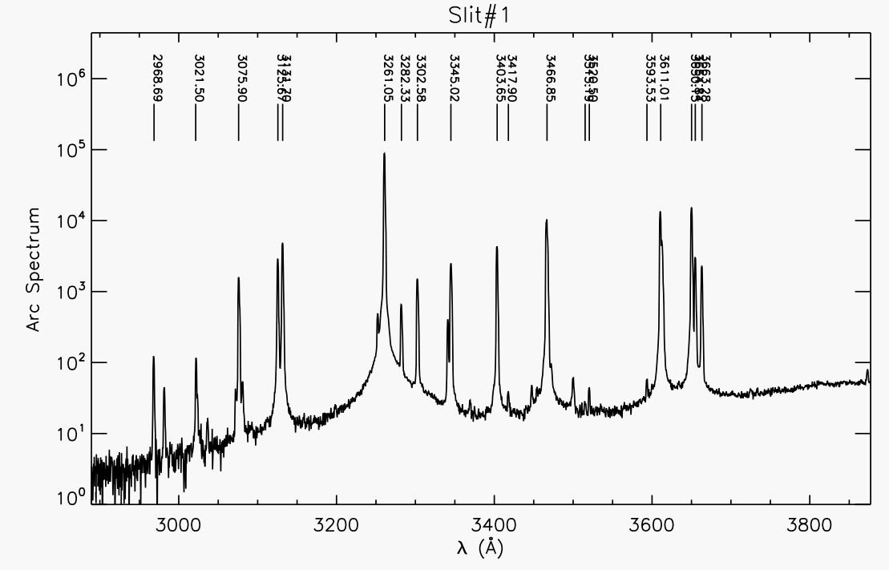
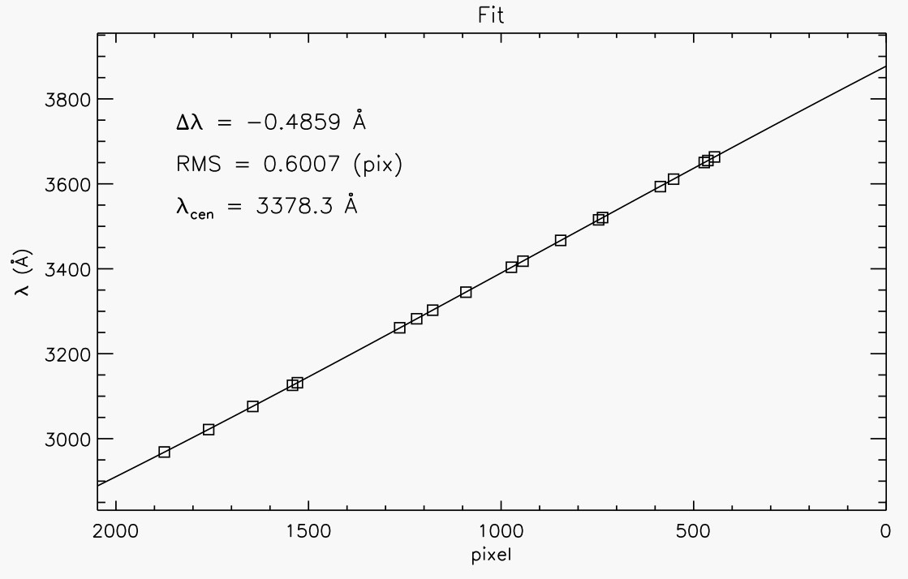
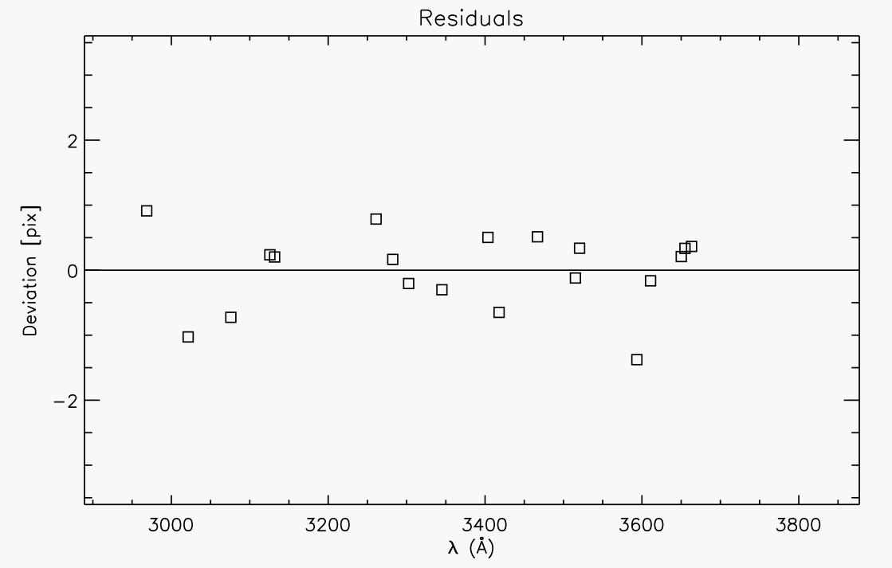
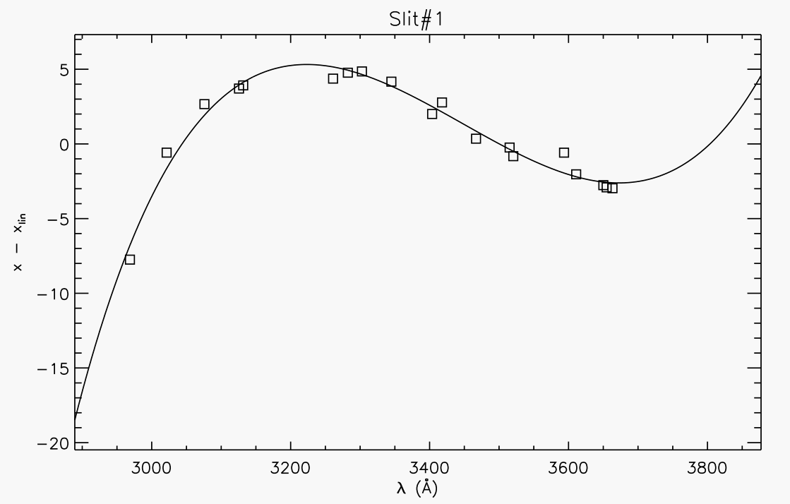
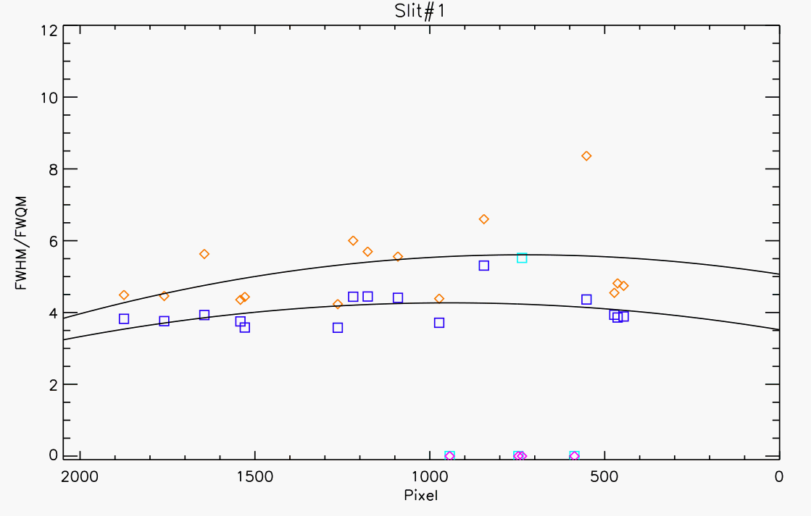

Arcs:
The code generates a multi-page postscript file for every
arc frame reduced. For every slit in the arc frame, 3 pages
of output are recorded. The upper panel of the first page shows
the 1D arc spectrum with the calibrated lines marked. Here is
an example

The lower panel of the first page shows the wavelength
of the 1D spectrum as a function of the pixels. The boxes
show the arc lines that were fit. The RMS, dispersion,
and central wavelength are also reported. Here is an example:

The upper panel of the 2nd page shows the residuals to the
fit in pixels as a function of wavelength. Here is an example:

The lower panel of the 2nd page shows the non-linear terms in
the fit. Here is an example:

Finally, the upper panel of the 3rd page shows the FWHM of the
arc lines (in pixels). Here is an example:
